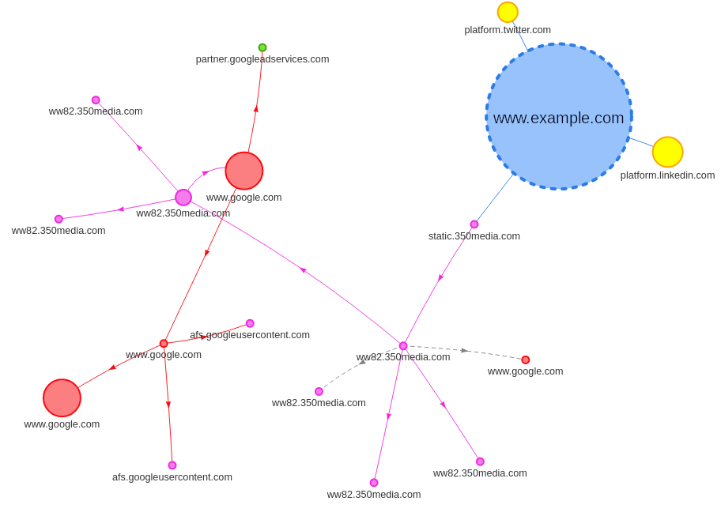
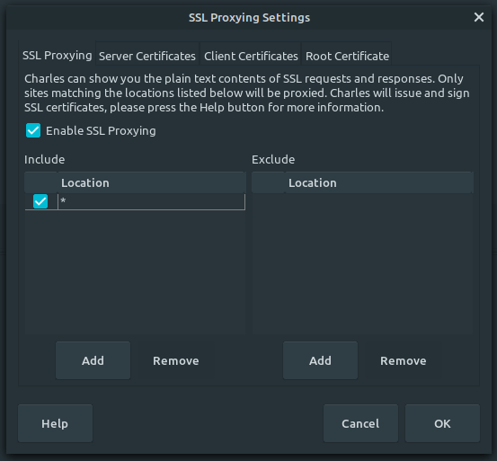
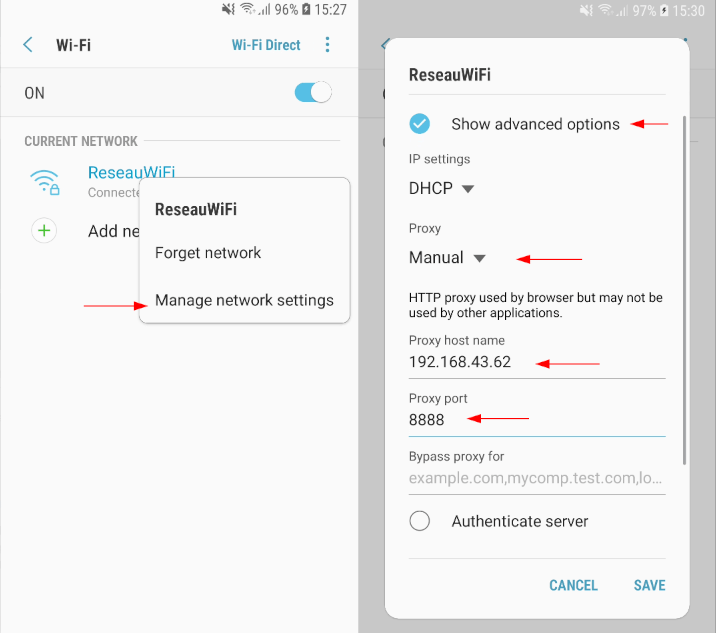
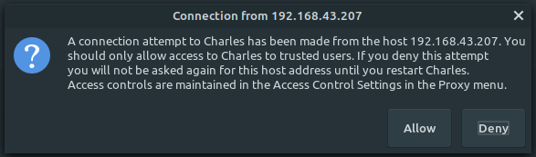
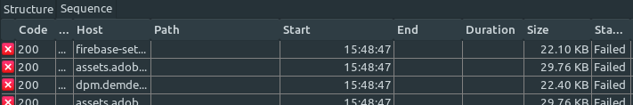
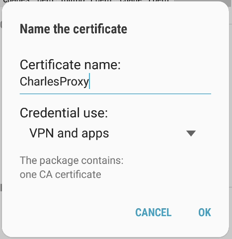
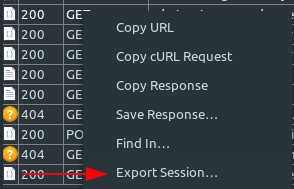
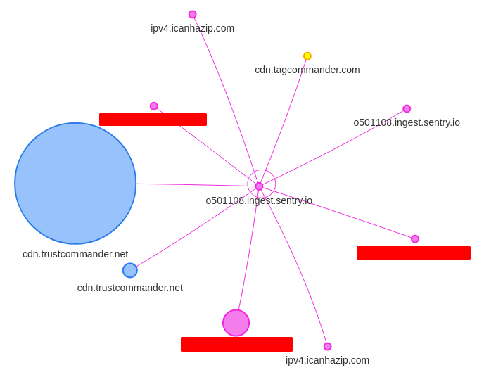

Introduction
Request Map Generator is a tool available through webpagetest.org to display a visualization of the different domain names called when loading a web page. The objectives are multiple:
- Identify the third-party services used on the page
- Identify which components call these third-party services
- Quantify their use and impact to challenge them
- Identify the main action levers
For example, on this RequestMap, we see that the integration of Twitter and Linkedin is responsible for downloading 71 KB of JavaScript. We also observe the chain of queries leading to Google.

The problem is that the tool is made available to audit websites. What about mobile apps? Our approach to generating the request map for mobile applications is simple.
HAR mapper
RequestMap developer Simon Hearne also provides the HAR mapper tool which generates the same request maps from HAR files. HAR are JSON files used to record traffic captured by various web analysis tools such as DevTools. Thus, rather than requesting an entire test of the webpagetest suite, you can very well choose to save an HTTP Archive file (.har) on your own PC. This allows us to build more precise RequestMaps, which go beyond the home page while being more numerically sober.
The other advantage is that we are able to analyze mobile applications using an SSL proxy, provided that the application authorizes a certain network configuration (see Authorizing access to Charles’ certificate by the application ).
CharlesProxy, the developer’s Swiss army knife
A proxy is a server that acts as an intermediary between the server and the client. The latter sends the requests to the proxy which is then responsible for communicating with the server. This allows the proxy to observe the different requests that are exchanged. In addition, if the client accepts the CA certificate from the proxy which will thus act as a Certificate Authority, the proxy will be able to decrypt HTTPS requests to inspect their content.
Charles Proxy is a proxy server whose use is oriented for mobile developers. In addition, to act as an SSL Proxy, it offers to rewrite on the fly the headers (or even the content!) of the requests exchanged. It allows you to test the stability of an application with network conditions, or server problems (throttling, repeated requests, no-cache, etc.). In our case, what interests us the most is that Charles makes it possible to save the client-server exchanges recorded in the form of a .har file.
We suggest using Charles Proxy because it is an easy-to-use and fairly complete tool, but be aware that other proxy servers can be used for this use case. As alternatives, there is in particular mitmproxy, an open-source command-line tool or HTTP toolkit very easy to use in a paid version.
Install and configure Charles
Download Charles and install it. When Charles is launched, a proxy server is automatically configured and requests are recorded.
By default Charles only enables SSL proxying for a restricted list of domain names. To change this behaviour, go to Proxy > SSL Proxying settings. Check that SSL proxying is enabled and add an * entry to the Include table:

Configure smartphone
It now remains to configure our Android smartphone to connect to Charles. The phone must be in the same local network as the PC Charles is running on. In the Wi-Fi settings, in the network configuration, set the Proxy as “Manual”. Enter the IP address of the PC on which Charles is running and define Charles’ port (8888 by default).

As soon as the smartphone communicates with the network, Charles will ask us to accept or refuse the proxy connection.

By accepting, Charles should start intercepting the network exchanges of the applications. However, the requests are not done correctly. Indeed, we still have to install Charles’ certificate on the phone.

Install Charles Certificate
Open the smartphone browser, and visit chls.pro/ssl. The download of the certificate is done automatically. If the file is open, Android offers to install it, provided that a PIN code locks the phone.
Attention from Android 11, the procedure is made more complicated. (Visit Charles’ help to install the certificate on other systems).
It is now possible for us to forward the requests issued by the Chrome process but not those of other applications. Indeed, for security reasons by default Android applications only accept “system” certificates (This is not the case for iOS which also offers a Charles application on the App Store).

Allow access to Charles’ certificate by an Android application
There are three possible scenarios::
- You have the source code of the application.
In this case, it is easy for you to authorize the use of “user” CA certificates. To do this, add ares/xml/network_security_config.xmlfile defining the network configuration rules of the application:
<?xml version="1.0" encoding="utf-8"?>
<network-security-config>
<base-config cleartextTrafficPermitted="true">
<trust-anchors>
<certificates src="system" />
<certificates src="user" overridePins="true" />
</trust-anchors>
</base-config>
</network-security-config> You must also specify its path in the AndroidManifest.xml:
<?xml version="1.0" encoding="utf-8"?>
<manifest ... >
<application android:networkSecurityConfig="@xml/network_security_config" ... >
...
</application>
</manifest> Remember to keep this configuration only for the debug application, because it can cause MAJOR security problems. See the official documentation for more details.
- You only have the application’s APK.
In this case, you will have to decompile the application, use the same method as in 2. and recompile the application and sign the resulting apk. For this, some tools (apk-mitm or patch-apk) can help you in the process. The method is however not guaranteed to work as the app may implement apk signature verification.
Attention! In France, the decompilation of software is strictly governed by the law which defines in which cases it is legal. If in doubt, be sure to get permission from the publisher first!
- The testing smartphone is rooted
Dans ce cas, vous pouvez installer le certificat dans les certificats root du téléphone.
Once the certificate can be used by the application, we can inspect the exchanges between the smartphone and the server. To generate a .har file, select all the requests, right-click in Charles on the network exchanges > Export Session… and export in HAR.

Import the file into HAR Mapper, and we have our Request Map!
